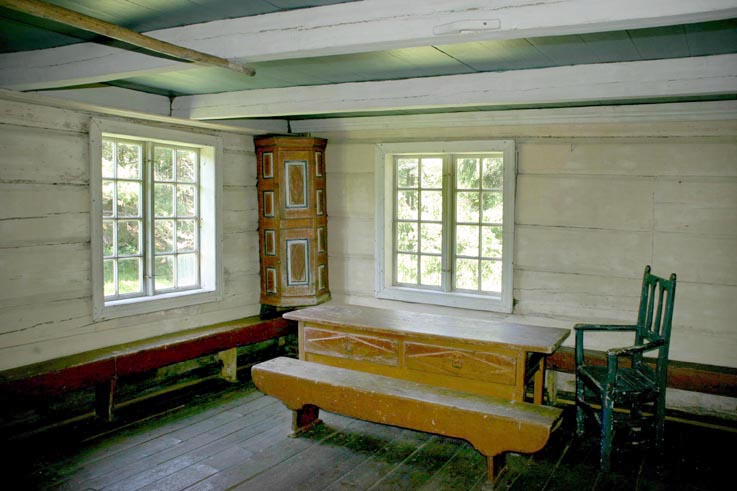
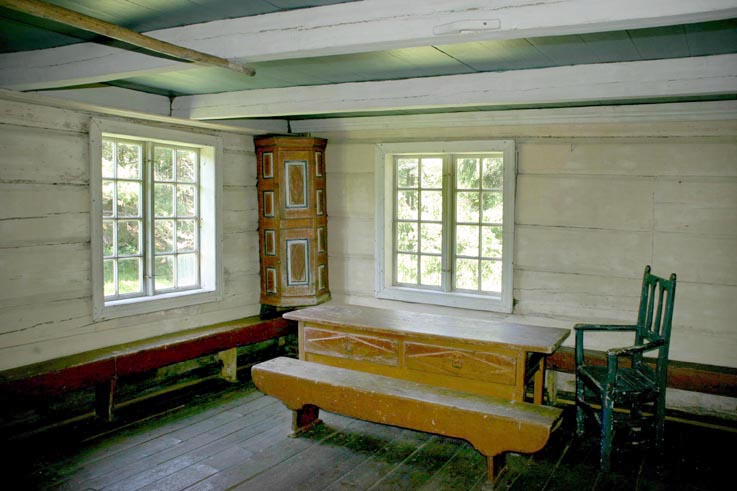

Vest-Agder Fylkesmuseum - Trydalsstova
Foto: Torvald Slettebø, Universitetet i Agder, Seniorsenteret (2004)
Tekst, med tillatelse, fra museets årbok for 2001: "Fra hus til hus."
Nystue fra Trydal, bygget: Slutten av 1700-tallet. Opprinnelig plassering: Trydal, Bykle kommune, Aust-Agder. Flyttet til museet: 1953. Eiere: 1865 Knud Halvorsen, 1972 Knut H. Trydal
Trydalstua er et karakteristisk våningshus fra Setesdal. På 1700-tallet ble en ny boligtype introdusert i Setesdal. Den var på to etasjer, hadde glassvinduer og peis med murt pipe. Disse bygningene ble kalt nystuer. De første nystuene tilhørte embetsmenn og andre som hadde god råd. Fra begynnelsen av 1800-tallet hadde nystuene fortrengt årestuene oppover hele dalen.
Langsiden på Trydalsstua er vendt mot tunet. Bygningen har bordkledning på forsiden og på den ene kortsiden. Fasadesiden er hvitmalt. På baksiden er det ingen paneling, og det er mulig å se byggeteknikken. Trydalsstua har to fulle etasjer. Konstruktivt består bygningen av to laftede tømmerkjerner i hver ende. I disse tømmerkjernene er det stuer. Mellom tømmerkjernene er huset satt opp i reisverk. I denne reisverkdelen ligger inngangspartiet med gang. Bygningstypen blir gjerne kalt midtgangshus.
Huset har ikke kjøkken, så maten ble tilberedt på grua inne i den ene stua. Karakteristisk for innredningen av disse stuene er det som i Setesdal og Vest-Agder blir kalt "den lange innredningen". Den består i at hele bakveggen er dekket av sener eller senger med et innebygget skap imellom. Sengene og skapet ble ofte dekorert i rosemalingsteknikk. I sengene ligger halm underst, mens tepper og skinnfeller ligger øverst. Skapet har hyller. Der ble melka satt inn.
Med nystua kom vinduer, pipe og lysere interiører. Røyken gikk ut gjennom en skorstein, og veggene ble ikke sotete slik som i årestua. Følgen var at man begynte å male vegger, senger og andre møbler. Denne bondemalingen blir gjerne kalt rosemaling. Malingen kunne de skaffe seg ved å bytte til seg farver mot smør i byen.
Nystua kommer opprinnelig fra Trydal i Bykle. Den var en del av bruk nr. 1 på gården, og museet kjøpte bygningen av Knut H. Trydal i 1952. Dette bruket var opprinnelig to bruk som gikk under navnene "Nordstog" og "Derinne". De ble slått sammen i 1867, og ble det største bruket på gården. I tillegg til jordbruk og husdyrhold drev eierne også skogsdrift på Trydal. Nystua på museet hørte til bruket "Derinne". Av folketellingen i 1865 går det fram at det bodde 13 mennesker i huset fordelt på to familier med barn og fire enslige unge menn. Det var eieren Knud Halvorsen med kone og en datter på ett år. Der var fern inderster, og den ene hadde kone og fire barn - tre døtre og en sønn. Det er ikke lett i dag å forestille seg hvordan 13 personer kunne få plass i de fire rommene. De to familiene har antakelig hatt hvert sitt rom nede, og de fire enslige mennene har delt de to rommene oppe. Bildet av de 13 personene i ett hus sier en god del om samfunnsforholdene. Det var blitt overskudd av mennesker på bygdene i andre halvpart av 1800-tallet. De måtte dra dit hvor de kunne få arbeid, og bo der hvor det fantes ei seng og litt plass. De tre inderstene bodde om vinteren til leie på "Derinne". Om sommeren hadde de arbeid på en eller annen gård, og tjente da nok til livets opphold resten av året. Eieren, Knud, klarte seg bra. Han hadde ingen gjeld, og han hadde penger til å betale fire arbeidskarer.
 
